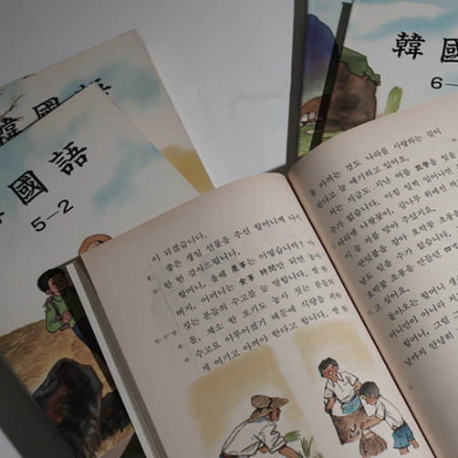
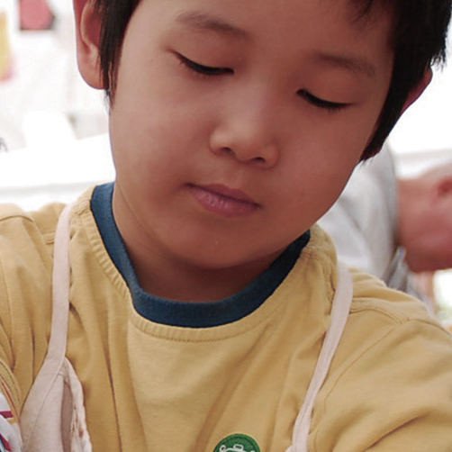
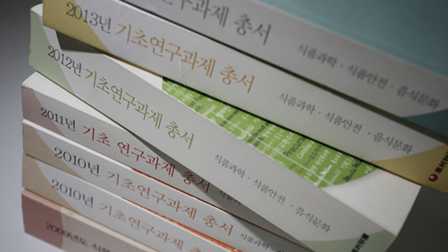
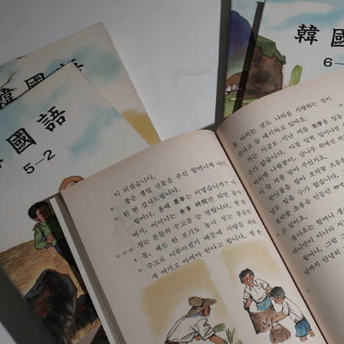

고교 한국어 국·한 혼용 책자개발 추진
 농심은 한글의 독창성, 표음문자의 우수성에 더하여 우리 문화와역사의 이해 및 계승발전을 위해 최소한 한자의 이해가
필요하다고 생각하여 연구비 1억 5천 만원을 투자하고, 각
과정별로 한자를 혼용한 한국어 교과서를 편찬하였습니다.
장학사업
율촌재단(栗忖財團)은 우수한 성적으로 배움의 길을 꿋꿋이학술연구 지원사업
진리를 탐구하고 학문을 연구하는 기본 목적은 우리 모두가 다청소년수련시설 운영
 율촌재단(栗忖財團)은 자연환경의 중요성과 소중함을 우리학술연구기관 및 단체 지원사업
사회 각 분야에서 뚜렷한 목적의식을 가지고 활동하고 있는발간 및 배포 사업
 학술연구지원활동을 통한 연구논문의 출판을 지원하고 이를 널리 배포하여 사회 전반의고교 한국어 국·한 혼용 책자개발 추진
 농심은 한글의 독창성, 표음문자의 우수성에 더하여 우리 문화와발간 및 배포사업 학술연구
지원활동을 통한 연구 논문의 출판을 지원하고 이를 널리학술연구 지원사업
기초 자연과학분야에서 첨단 생명 공학분야까지 각 분야에서 우수한 연구 과제를 선정, 성공적